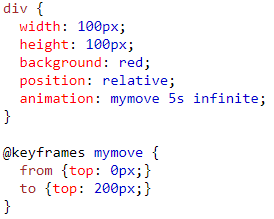
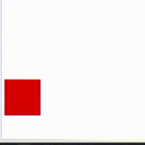

CSS : Animations
เป็นการทำให้ element ที่เลือกเกิดการเคลื่อนไหวหรือเปลี่ยนแปลงไปตามที่ได้กำหนดไว้ หลักการทำงานของ CSS3 Animations ก็คือ 1. สร้าง Animation name และ 2. Add Keyframe ซึ่งเมื่อเราสร้าง Animation name แล้ว เราสามารถที่จะเพิ่มคำสั่งให้ animation ที่เราสร้างขึ้นมานั้น ทำงานในรูปแบบต่างๆ ด้วยคำสั่งที่เราต้องการ
คำสั่งพื้นฐานของ Animation ใน CSS3 มีดังนี้
- animation-name คือ การตั้งชื่อให้กับรูปแบบการแสดงการเคลื่อนไหว
- animation-duration คือ ระยะเวลาของการเคลื่อนไหว จาก ต้นทาง ไป ปลายทาง
- animation-timing-function คือ รูปแบบการเล่นใน 1 รอบของการเคลื่อนไหวของ keyframe
- animation-iteration-count คือ การทำซ้ำ เช่น จะให้ทำกี่รอบ หรือ infinite คือวนไม่หยุด
- animation-direction คือ การสั่งทิศทางการเล่น เช่น จาก 1 ถึง 10 หรือจะให้เล่นถอยหลัง จาก 10 มา 1
- animation-delay คือ จะให้เริ่มทำทันที หรือ ดีเลย์ ตามเวลาที่กำหนด เช่น ถ้าเรากดปุ่มแล้วต้องการให้ animation ที่เราสั่งงานเริ่มเล่นเมื่อเวลาผ่านไปหลังจากกดปุ่ม 2 วินาที เราสามารถกำหนดได้ใน animation-delay โดยค่าเริ่มต้นคือ 0 ซึ่งเป็นการสั่งให้เล่นทันที
- animation คือ shorthand property หรือการเขียนแบบย่อ โดยการใส่ค่าควรเรียงลำดับจาก animation-name || animation-duration || animation-timing-function || animation-delay || animation-iteration-count || animation-direction
เราสามารถที่จะสร้างรูปแบบการเคลื่อนไหวให้แก่ Object ก่อน หรือ สร้าง Keyframes ขึ้นมาก่อนก็ได้ แล้วแต่ความถนัดส่วนบุคคล การเคลื่อนไหวของแต่ละอย่างนั้นจะเริ่มนับจากจุด เริ่ม ไปยังจุดสิ้นสุด โดยที่เราเป็นคนกำหนดเอง เราสามารถกำหนดว่า เริ่มจาก A ไปยัง B ให้ใช้ A เป็นจุดที่ 0% และ B เป็นจุดที่ 100% ของการเดินทาง โดยในระหว่างทางที่เดินนั้น เราสามารถเพิ่มคำสั่งงาน Animation ได้อีกใน Keyframes นั้นๆ
Example :


CSS : z-index
z-index คือ ตัวกำหนดจัดการ การซ้อนทับของlayout ในแกน z ยิ่ง value มีค่ามากจะทำให้ element ที่กำหนดซ้อนอยู่หน้าสุด ยิ่งน้อยจะยิ่งโดนทับไว้ข้างหลัง
element ที่สามารถใช้ z-index ได้ต้องมีการกำหนด position ตัวใดตัวหนึ่ง ดังนี้
position : relative || absolute || fixed || sticky ;
z-index:auto || number
CSS : object-fit
object-fit คือ การกำหนดให้ tag img หรือ video ปรับขนาดตาม container โดยสามารถกำหนดได้ดังนี้
- fill - นี่คือค่าเริ่มต้นวัตถุจะปรับขนาดตามมิติที่กำหนดไว้ จะยืดหรือหดเพื่อให้พอดีกับกล่องที่มาคลุมไว้
- contain - The image keeps its aspect ratio, but is resized to fit within the given dimension
- cover - The image keeps its aspect ratio and fills the given dimension. The image will be clipped to fit
- none - The image is not resized
- scale-down - the image is scaled down to the smallest version of none or contain
CSS : transition
transition เป็นสิ่งที่ช่วยให้การเปลี่ยนค่าต่างๆ ของ element เป็นไปอย่างราบรื่น
- transition-property - กำหนด property ที่ต้องการใช้ transition
- transition-duration - กำหนดระยะเวลาในการ transition
- transition-timing-function - กำหนดรูปแบบการเร่งความเร็วของ transition
- transition-delay - กำหนดความล่าช้าของ transition
- transition - กำหนด transition รวมกันเป็นบรรทัดเดียว
โดยใส่ค่าตามนี้ property duration timing-function delay โดย timing-function และ delay ไม่จำเป็นต้องกำหนดก็ได้